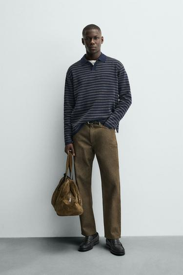
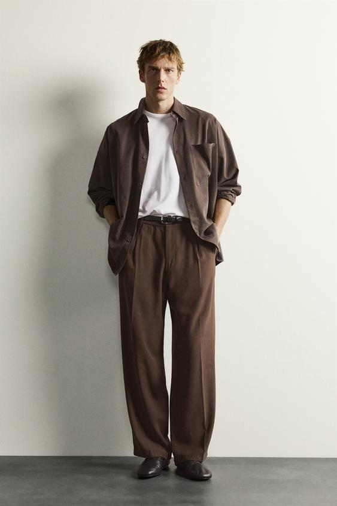
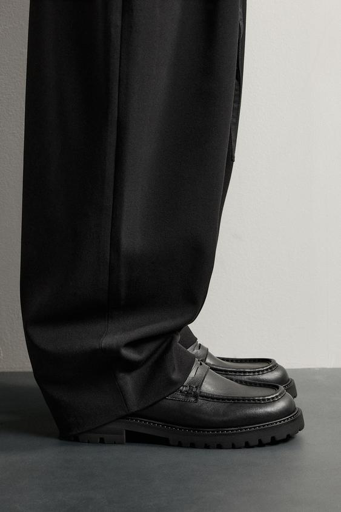
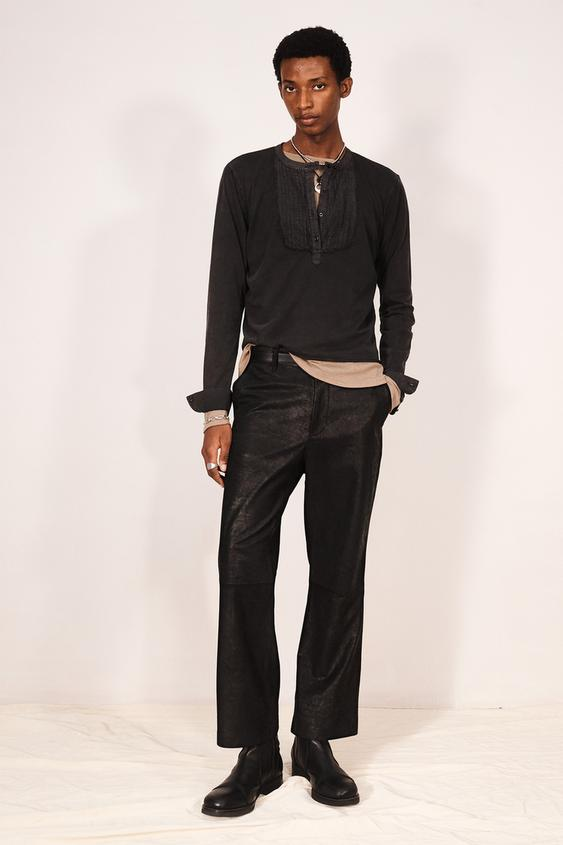

一条裤子换一双鞋，裤脚可能悬在鞋口上方，也可能刚碰到鞋面，或在脚踝附近堆出褶皱。裤子的长度没有改变，鞋的高度、宽度和表面却改变了它最后落下来的样子。
鞋与裤脚的配合，首先可以看三个位置：裤脚停在哪里，裤口与鞋身谁更宽，鞋面还露出多少。这些关系决定下半身是连续、舒展，还是在脚踝附近形成明显的分段与分量。下面结合四张 ZARA 男士造型图，具体分析它们怎样影响一套穿搭的比例。
裤长要连同鞋一起看
裤脚是裤腿最下方的边缘；裤口宽度则是这一圈开口的大小。平铺量出的长度相同，穿在不同高度的腰位上，或落到不同的鞋上，实际效果也可能不同。
鞋面指覆盖脚上部的部分，鞋口是脚进入鞋的开口。低口乐福鞋、鞋舌较高的运动鞋与短靴，在脚踝周围提供了不同的形状：裤脚可能继续下垂，也可能较早碰到鞋面或被鞋帮挡住。
裤脚碰到鞋、不能继续自然下垂时，前面常会形成一道弯折。英文搭配资料常用 break 描述这种折痕；裤长与小腿处的收窄程度都会影响它，鞋口高度也会改变裤脚与鞋相接的位置。Proper Cloth：裤脚折痕的含义
可以先用三种可见状态观察，而不急着记住所有分类名称：
| 裤脚的状态 | 先看什么 | 容易形成的视觉关系 |
|---|---|---|
| 与鞋面分开 | 露出的是皮肤、袜子，还是靴筒 | 裤子与鞋之间出现一段可见区域 |
| 刚接触鞋面 | 下缘是否平顺，前面有多少弯折 | 裤腿向下的线条较容易保持清楚 |
| 明显覆盖、折叠 | 褶皱聚集在哪里，鞋头还露出多少 | 分量集中在下端，直线转为折线 |
这些状态没有统一的优劣顺序。西裤的经典穿法、宽松长裤的垂落，以及短裤脚配靴子的造型，可以采用不同处理。Suitsupply 的合身指南就同时展示了带一道折痕与较平直的裤脚；它讨论的是特定裁剪与穿着方向，不能据此要求所有裤子都停在同一个高度。Suitsupply：裤长与靴子的配合
裤脚的折叠还取决于它能不能绕过鞋身。裤口较宽时，布料可能从鞋的两侧继续落下；裤口较窄时，同一位置可能较早碰到鞋背，布料便在上面弯折。因此，看到褶皱就一律改短，有时会改变原本想要的长度，却没有处理裤口被撑住的问题。面料较挺还是较柔软，又会让这道折线呈现不同状态：前者可能有清楚转角，后者可能形成较连续的垂落与堆叠。具体要看穿好鞋之后的样子。
直筒裤接近鞋面：让下端保持清楚

图一：裤腿向下的线条较完整，鞋的轮廓仍然可见。图源：ZARA 直筒牛仔裤官方商品图，款号6917/400/730。
先看裤腿两侧。它们没有在脚踝附近突然收得很窄，裤口也没有完全覆盖黑色鞋头。浅棕色裤子落到鞋面附近，留下了裤腿与鞋各自的形状。
这种效果与裤脚没有大量折叠有关：视线可以沿裤腿向下移动，再看见黑色鞋身。裤口在两只脚上的状态略有不同，站姿和脚的朝向也参与其中；看照片时，应观察整体的落点，而不是凭一侧的高低判断实际裁剪长度。
黑色鞋与棕色裤子有清楚的深浅区别。鞋在下方形成一块较集中的深色，呼应上身的深色针织，却没有因为裤脚堆积而与大量暗褶混在一起。裤腿保留直线，鞋头保留边界，两者容易分别辨认。
如果想借鉴这类清楚、不过分紧绷的关系，可以先试直筒或适度收窄的裤子，让裤脚接近常穿的鞋面，再观察正面和侧面的弯折。想让裤腿显得平直，除了调整长度，也要看裤口有没有被鞋面撑住，或卡在鞋帮上。
这里不需要把裤子一律改成“九分”。同样的裤长，对不同身高、腰位和鞋子，落点都会变化。真正有用的参照，是自己穿好鞋之后，裤脚能否形成想要的边界。
垂坠长裤覆盖鞋面：把纵向线条延伸到下方

图二：宽裤口覆盖鞋面，鞋头从下方露出。图源：ZARA 垂坠感宽松褶裥裤官方商品图，款号1195/327/700。
这套造型的裤脚更接近地面，覆盖了较多鞋面。裤腿从腰部垂下来，在脚背附近才发生较明显的转折。ZARA 将它描述为采用垂坠感黏胶混纺面料的宽松裤；照片中可以观察到较长的下落线条，以及下端随鞋形出现的褶皱。
裤口较宽，使鞋可以有一部分藏在里面。深色鞋头继续向前伸出，裤腿与鞋没有形成明显的肤色间隔。裤子的纵向范围因而一直延伸到接近地面的区域，鞋则承担末端的收束。
但这种长线条不完全由裤长决定。上衣敞开，白色内搭在腰部附近收住，皮带位置可见；观察者能够辨认裤子从哪里开始。腰部的起点与裤脚的终点同时进入画面，才形成这套衣服的上下关系。
如果把上衣换成盖住较多裤身的长款，腰位不再明显，即使裤长完全相同，整套造型的比例也会改变。若鞋头几乎全部被覆盖，下方的收束又会减弱，裤子可能显得更宽、更接近一个完整的深色块。
这类穿法值得比较的是“覆盖了多少”，而不是单纯追求更长。少量下端褶皱可以保留随身体活动的感觉；褶皱过多时，视线也会停留在脚踝附近。喜欢较舒展的垂落，就需要同时检查裤子的宽度、面料和鞋面形状。
实际穿着还要看后跟：站着好看，不代表走路时不会踩到裤脚。试穿时穿上准备搭配的鞋，走几步、转身，再看后侧落点，比只看正面照片更可靠。
宽裤与厚底乐福鞋：分量集中在哪里

图三：裤脚折线、鞋头和厚底在下方共同形成分量。图源：ZARA 厚底乐福鞋官方商品图，款号2666/620/800。
这张近景能看见前两张全身图里较小的细节。黑色裤脚已经落到鞋面，在前方形成一道明显折线；鞋跟附近被裤子遮住，鞋头与外露鞋底则留在画面中。
这里所说的“分量”，指看到的大小、厚度和深浅，并不等于鞋子实际有多重。鞋底侧墙较厚，下面又有清楚的齿纹；鞋面前端有围出轮廓的缝线。这些结构让脚部成为较明确的形状，能够与上方较宽的裤腿相接。
裤子与鞋虽然都是黑色，仍没有完全融成一片。布面的折叠产生较宽的明暗变化，皮革鞋面出现更集中的反光，鞋底边缘又建立了一条清楚的下界。颜色联系起两者，表面差别帮助观看者把它们分开。
如果在这套宽裤下换一双外形较薄、鞋头较小的鞋，露出的鞋身可能更少，下方的形状也会变轻。这样的选择可以保留宽裤的柔软垂落；若希望鞋成为明确的支点，则可以比较更有体积的鞋头或鞋底。两种效果需要在整套衣服里选择，并不存在“宽裤只能配厚底”的固定关系。
同样叫乐福鞋，结构也可能差别很大。ZARA 另有尖头、同色鞋底与较小鞋跟的款式；不能仅按“乐福鞋”这个名称，推断它放在裤脚下面的分量。ZARA：另一款乐福鞋的结构说明
这张图片只展示下半部，能支持的是裤脚、鞋面和鞋底的关系。是否与上身协调，仍要回到全身观察：外套、肩部和裤腿已经较宽时，脚下再加入厚底，会让哪些部位更突出？鞋很醒目，但是否遮住了原本想保留的裤形？这些比判断“厚底显不显高”更有实际作用。
较短裤脚与短靴：露出的不一定是脚踝

图四：裤脚在较高处结束，靴筒延续了下方的深色。图源：ZARA 拉链短靴官方商品图，款号2052/820/800。
这套造型中的裤子没有一直覆盖到鞋面，裤脚与前面几套相比更高。它下面露出的是深色靴筒，腿部与鞋之间没有明显的肤色空白。
因此，裤子虽然较短，深色形状却仍然向下连接。布面与靴子的表面、宽窄又有区别：裤腿较宽，靴筒相对收紧，下面再展开成鞋身。下半身出现了“宽—窄—展开”的轮廓变化，而不只是一条直线落到地面。
这种变化使靴子的结构更容易被看到。若裤脚一直盖住鞋面，靴筒就会退到裤子里面；换成低口鞋，相同位置可能露出袜子或皮肤，分段的颜色与面积便会改变。裤长是否合适，需要连同它下面出现的内容一起判断。
靴筒也可能在实际穿着中挡住裤口。图中较宽的裤口给靴子留出了空间；若换成更窄的裤口，就要看看裤脚能否自然落下，走路后会不会停在靴筒上。想让靴子藏在裤子里面，与想主动露出靴筒，是两种不同目标。
图中的深色上衣与裤子、靴子建立了较连续的色调，浅色内搭又在腰部附近出现一段边缘。下方的分段与上方的叠穿同时存在，整套形象因此并非从头到脚完全平滑。鞋履与裤脚的关系，最终仍要放回人物全身看。
同一双鞋，怎样成为不同造型的末端
把四张图放在一起，能发现鞋履选择不只是“正式还是休闲”。它还涉及两种视觉安排：让鞋与裤腿连成较完整的形状，或让它们分别成为可辨认的部分。
颜色相近时，裤子与鞋更容易形成连续的深浅区域；颜色差别明显时，鞋的边界更突出。但袜子也会加入其中。深色袜子可以连接深色裤子与鞋，亮色袜子则会在中间增加一个新的色块。是否露出这一段，应该与自己想强调的位置一致。
材质会继续调整关系。光滑鞋面出现集中的反光，可以让深色鞋在深色裤子下面仍然清楚；纹理较柔和、反光较分散的表面，则可能把注意力更多留给裤腿形状。照片中的光线也会改变这种强弱，不能只看商品名称就断定最终效果。
鞋头的长短、宽窄同样需要和露出面积一起看。一双鞋的前端较长，但大部分被裤脚覆盖，表现出的形状会与完全露出时不同。厚鞋底如果藏在较长裤脚下面，只在底部留出一小段，也未必成为整套穿搭最醒目的地方。
所以，单独挑到喜欢的鞋之后，还需要穿上具体的裤子看一次。决定形象的，往往是两件单品相接时留下的边界，而不只是它们各自属于什么类别。
试穿时，先改变一个条件
可以从自己最常穿的一条裤子开始，保持腰位与上衣不变，换两双高度或体积不同的鞋。正面看裤口与鞋头的宽窄，侧面看鞋面把裤脚顶起多少，后面看下缘与地面的距离。这样比较，更容易知道变化来自哪里。
如果问题主要出在裤长，可以在试衣环境里临时向内折起少量裤脚，比较前后的落点，再决定是否修改；临时折起只是观察方法，正式改短还要考虑布料、原有裤边和想配的鞋。尤其是只有一条裤子需要适配多双鞋时，不必为某一双鞋追求极端长度。
站立之后还要坐下、迈步和上下台阶。坐下时露出更多袜子或靴筒是正常的状态变化；希望呈现什么样的细节，可以在试穿时一起确认。裤脚频繁卡住、拖地或踩到后跟，则需要先处理实际使用问题。
拍照比较时，尽量保持相同距离、镜头高度和站姿。单独的鞋部近景会放大脚下分量，全身照片才能说明它与腰位、肩宽和上衣长度的关系。不要用一张低机位照片和另一张高机位照片，直接判断哪套衣服更“显腿长”。
与裁缝或店员沟通时，可以说得具体一些：
我主要配这双鞋，希望裤脚接近鞋面，前面不要积太多褶皱，后面走路时不要踩到。裤口的宽松感想保留。请帮我看看需要调整的是长度，还是裤脚与鞋面相接的位置。
这比只说“改得利落一点”更能说明想保留什么。喜欢垂坠长裤的人，也可以明确提出希望覆盖部分鞋面、保留适量下端褶皱，而不是让对方自动按另一套偏好改短。
鞋与裤脚的配合，可以在这些细小的观察里逐渐确定：裤腿从哪里开始，怎样落下，在鞋面附近发生了什么变化，以及鞋最后露出什么形状。比例也就在这些相接的位置形成。
留言
由 Disqus 提供。